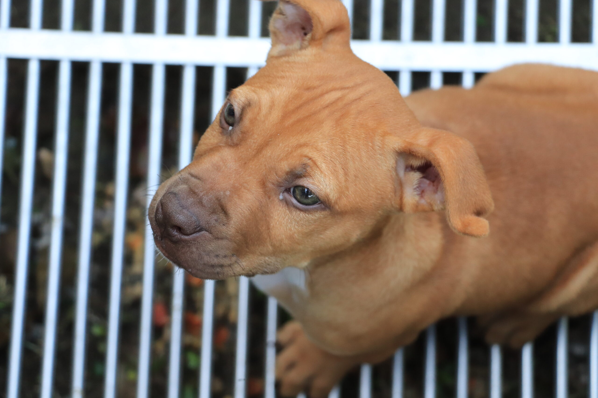
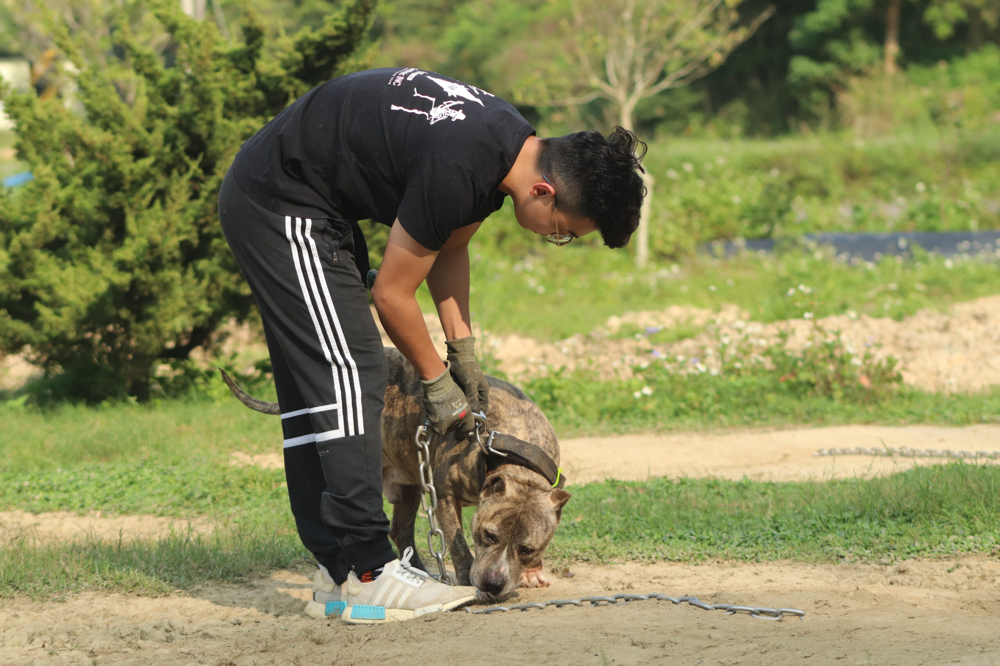
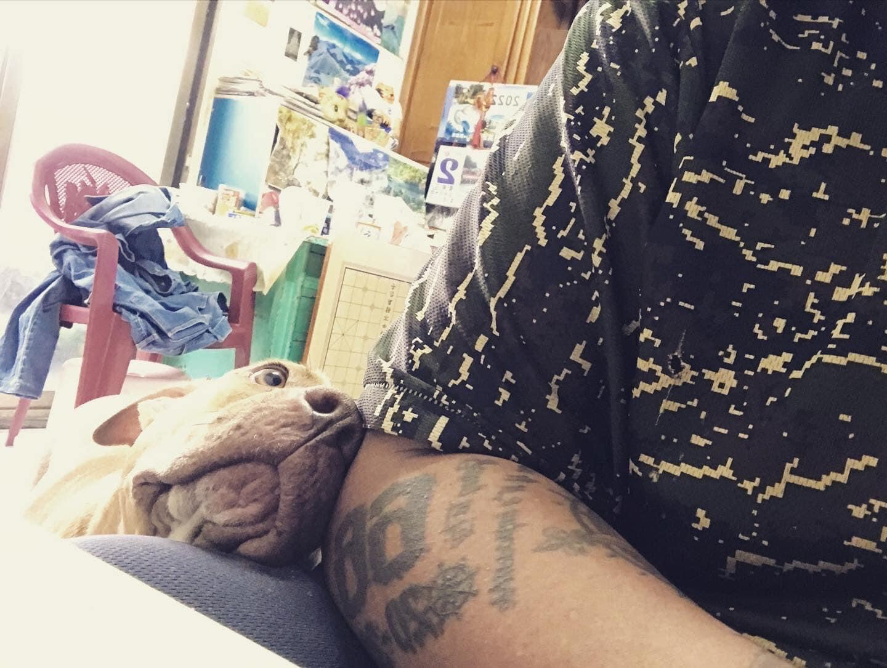

【專題記者顏婕儒、李昀璇、陳楷霖、許如鎧綜合報導】「二十年後，台灣街上可能就看不到比特犬了。」
坐落山邊的犬舍之外，鼎沸的犬吠聲在偏僻的鄉間道路不絕於耳，10多分鐘也不見停歇。跟隨犬舍老闆的引導，我們膽怯地步入犬舍，只見十餘隻比特犬被牽出放風，映入眼簾的不是猛犬的凶神惡煞，而是狗兒因貪玩撒嬌的模樣。
在不少人眼中，比特犬卻是殺人不眨眼的冷血殺手。強健的四肢、銳利的獠牙與凶惡的眼神總是吸引著人們的目光，牠們好似一群天性嗜血的猛獸，民眾的恐懼感也在街談巷語之間逐漸擴散，反對飼養比特犬的呼聲在台灣此起彼落，牠們彷彿成為全民公敵，而比特犬禁養令的說法也在這樣的氛圍下應運而生。
隨著法令祭出的明朗化，出乎民眾與政府意料的棄養現象在各地逐漸出現，曾經威風八面的比特犬，如今卻成人們避之唯恐不及的燙手山芋。一把名為禁養令的火，在試圖燒盡犬隻傷人現象的同時，似乎也燒出飼養秩序的混亂與部分飼主的草率。
究竟為什麼被喻為人類摯友的狗，會淪為人人喊打的過街老鼠呢？
「5比特犬瘋狂撕咬 1歲男『骨頭外露』面目全非」、「4歲童被比特犬瘋狂啃咬！母捨身救兒被『咬斷雙臂』不幸慘死」、「比特犬疑遭棄養現蹤嘉義山區 咬死3土狗」。比特犬攻擊人或其他動物引發嚴重死傷，在國內外皆為媒體關注的重點，比特犬飼主謝偉忠說：「可能標題就是比特犬又闖禍了、又有比特犬咬傷人之類的，那大家就會覺得比特犬很兇。」媒體如此頻繁地報導，容易使社會對比特犬的恐懼逐漸深化。
比特犬為數種鬥牛犬類的總稱，一開始是作為「鬥犬」目的所培育出的狗種，因此基因裡就存在好鬥的特質，加上本身咬合力強以及絕不輕易鬆口的個性，在台灣被列為危險性犬隻。而雄性比特犬平均體重約30公斤，雌性則落在22至25公斤之間。其實早在民國90年，農委會即規範體重23公斤以上的大型犬隻，出入公共場所時應由成年人伴同，並以長度不超過1.5公尺的鍊繩牽引，而包含比特犬在內的具攻擊性品種，或是有攻擊紀錄的犬隻，則應戴上口罩作為防護。
然而，即便祭出犬隻飼養規範，狗攻擊人的事件依舊不斷上演，農委會畜牧處動物保護科科長鄭祝菁表示，「如果被比特犬攻擊，通常就是死亡。」考慮到比特犬兇猛的天性，農委會在去年修正「指定禁止飼養輸入或輸出之動物」公告事項，規定比特犬及其混血犬隻，包括美國比特鬥牛犬與美國史大佛下牛頭犬，於今年3月1日起禁止飼養及進口，已飼養者也須在明年2月28日前至地方主管機關（例如：台北市動物保護處）登記，違者依規定最高可罰新台幣25萬元。此外，繁殖業者種犬依現有規範最多僅能7年7胎，且下一代犬隻不得再進行繁殖。

此為3個月大的比特犬。依據新法規定，唯有曾登記飼養過比特犬的飼主才能購買及代養。 圖／顏婕儒攝
根據聯合新聞網等媒體報導，法規公布後，新北市、桃園縣、新竹縣、嘉義縣等地紛紛出現流浪比特犬的蹤跡。台灣防止虐待動物協會研究倡議專員賈皓婷則以全國收容系統的數據說明，法令公告前全國收容的比特犬總量為31隻，而截至3月16日為止，此數字已攀升至81隻。台灣比特犬被丟棄的情形是否達到「潮」的程度或許有待商榷，但情形比起過去更為嚴重已是板上釘釘。
比特犬流浪在外，除了對自身帶來危險，也對外界造成負面影響。賈皓婷說明，流浪犬隻若未得到妥善的飲食及醫療照顧，再加上路殺等因素，死亡機率將大大提升。亞興犬舍負責人鄧清芸則指出，由於比特犬的強勢性格，使其在外佔盡求偶優勢，更大比例的混血浪犬將承襲比特犬的壯碩體格，再加上難以預測的個性，種種因素為台灣本就嚴重的流浪狗問題增添疑慮。
不僅如此，由於比特犬較不親近其他物種，失去飼主控制的比特犬成了其他家畜、動物的威脅。據TVBS報導，嘉義縣去年12月初便曾發生流浪比特犬咬死3隻家犬的案例；今年初，新竹縣也曾傳出流浪比特犬攻擊家貓的消息，再再顯示比特犬遭遺棄在外會對社會造成危險。
 具有多年飼養比特犬經驗的鄧清芸表示，一旦被比特犬咬傷，當務之急是固定狗頭，「鎖喉、抱頭，讓他的四隻腳懸空。」如此便能阻止牠甩動，減少撕裂傷並拖延時間，找人求救。 圖／許如鎧攝
具有多年飼養比特犬經驗的鄧清芸表示，一旦被比特犬咬傷，當務之急是固定狗頭，「鎖喉、抱頭，讓他的四隻腳懸空。」如此便能阻止牠甩動，減少撕裂傷並拖延時間，找人求救。 圖／許如鎧攝
突如其來的棄養現象絕非一日之寒，就台灣犬隻而言，寵物登記與晶片植入式屬強制規範，根據《動物保護法》規定，犬貓未辦理寵物晶片登記，可罰3000到1萬5000元罰鍰。針對此法規，賈皓婷直言，「在台灣，我們不覺得有被落實得很徹底。」飼主若未自發攜帶犬隻前往登記，執法單位也難以主動追查取締，而政府亦未因此頒布相關配套，導致包括比特犬在內的未登記犬隻長期遊蕩於灰色地帶，讓台灣飼養環境陷入消極放任的泥濘。
在犬隻登記難以落實的情況下，「私人繁殖」（以下簡稱私繁）逐漸在暗處興盛。根據資深飼主與鄧清芸透露，私繁並非傳統的非法繁殖場，而是源自一般民眾的非法途徑。飼主通常會將家中正值發情期的比特犬PO上臉書社團，並且在貼文中寫上公開徵伴，待毛孩生下數胎，飼主便會將幼犬再次發上社團送養，而收養者則私下包紅包給送養者做為謝禮。鄧清芸指出，「比特犬的成交金額都是在兩萬上下（合法繁殖場），可是非繁（非法繁殖）的，不要說一萬啦，五六千塊都有。」如此低廉的價格，也讓此類飼主不甚珍惜這些「身世不詳」的比特犬，更因牠們大多來歷不明而未作登記，在禁令頒布後，不少飼主因害怕麻煩而棄之如敝屣。
此外，對新法規不熟稔也是飼主遺棄比特犬的可能原因之一。鄧清芸就曾於公布法令後收到客戶來電要求送還犬隻，詢問原因才發現其將法令誤解為「3月1日後每個人都不得飼養比特犬」。他同時也點出流言對於飼養意願的影響，「有太多人，包括我的客戶聽到左鄰右舍說這種狗要禁養了，叫他趕快抓去收容所或送別人。」賈皓婷則認為，雖然農委會公告內容已十分清楚，但仍須更強烈地宣導及教育民眾，「畢竟不是每個人都會認真地去了解這份公告的真正含意。」

對於比特犬的棄養狀況，農委會畜牧處動物保護科科長鄭祝菁表示，「要養這類特殊犬種的時候，就知道他的危險性，並負起飼主責任。」 圖／許如鎧攝
比特犬造成死傷的新聞屢見不鮮，每每出現便在台灣掀起軒然大波，卻不見得能讓大眾真正認識牠們。謝偉忠分享，在與比特犬Syako相遇之初，對牠們的認識僅源自新聞，「兇殘」、「暴戾」的刻板印象深烙心底，相見時甚至帶著懼怕的心態，卻沒想到Syako的表現相當親人，甚至與家中其他寵物打成一片，這令人「錯愕」的表現更讓他在一夕之間轉念，謝偉忠更坦言：「我很感謝我遇到這隻狗，幫我把對比特犬的標籤拿掉。」
「我覺得狗的個性，九成是可以被訓練跟教育的，不能因為牠的犬種，就認定牠。」談及禁令，謝偉忠感嘆地說。就他和Syako相處兩年多的經驗，比特犬和過往飼養的其他犬種並無二異，甚至可說相當親人，和他過去從媒體與大眾說法接受到的訊息大相逕庭。而社團法人台灣愛狗人協會理事長顏杏娟也認為，飼主的飼養方式會影響比特犬是否受控，「真的沒有不好的狗，只有不好的飼主。」然而，狗無法言語，更無法為自己的行為辯護，所有的輿論和責任也因此指向這群「保持緘默的殺人犯」。
謝偉忠建議政府應瞭解飼主如何飼養兇猛犬隻，並評估其能力，「因為出問題的是人，不是狗。」若能在法規中規範飼主考核或認證的機制，便得以在確保大眾安全的同時，保障各犬種的生存權和人們的飼養權。賈皓婷則強調，唯有落實《犬隻飼養與照護指南》的普及與法制化，進而解決台灣目前大量鏈養、籠養犬隻的現象，才能改善飼主不當飼養問題，藉由促進動物福利減少人犬衝突。
「台灣就是一個太容易養狗又很容易丟狗的國家。」王昱智認為，政府應加強飼主對寵物的責任教育，並落實寵物登記和晶片施打的規範，再透過課程教學或加重罰則等方式，以杜絕棄養問題，提升國內整體飼養品質。

比特犬Syako靜靜地倚著謝偉忠，斗大的眼透出無限的忠誠與依賴，殊不知自己已經成為禁令之下的末代比特犬。 圖／謝偉忠提供
Syako依偎在謝偉忠身旁，露出無辜大眼撒嬌討摸，人狗關係緊密的畫面，對比多數媒體報導中，孤獨鏈在門外的比特犬們，又是另一種景象。比特犬傷人，究竟是天性所致，還是飼養不當？禁養令下，犬隻傷人事件是否也會隨著比特犬逐年凋零而不復存在？未來，比特犬將消失於街頭，遭棄的流浪動物卻仍可能流連街巷角落中，唯有政府積極引導觀念並落實法規、飼主負擔飼養責任，方能建立人犬共榮的環境。